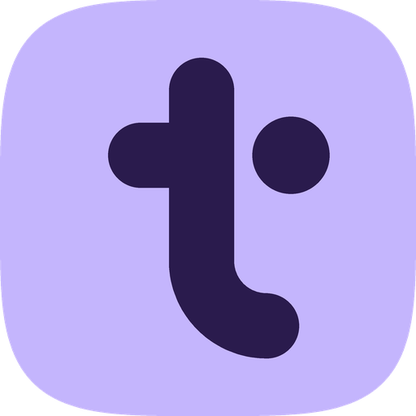

TapKeyStreaming your PC to an iPad with Moonlight? TapKey adds the mouse actions touch is missing. Double-tap any spot, and a small overlay appears right there. Single taps stay untouched.
29 seconds, start to finish. Plays automatically, muted — tap the player for sound.
TapKey lives in the Windows tray and watches the low-level mouse hook. No client fork, no fixed HUD.
Every single tap passes straight through to the app — zero delay, nothing swallowed.
Two taps at the same point within 250 ms open a translucent button panel next to it.
Right-click, scroll, hold, double-click or drag — executed exactly where you double-tapped.
Six big, bold buttons on a see-through lavender panel — readable over the stream and sized for fingers.
Recorded live on Windows — double-tap a spot, tap a button, done.
Context menu exactly where you double-tapped. One-shot actions close the panel automatically.
Two notches per tap. The panel stays open for repeat taps, and the cursor returns afterwards.
Plan a path on the D-pad — the dot follows — then Drop replays it as a real held-button drag.
Small, portable, and careful with your input.
Only the trigger tap is ever consumed. A false double-tap just shows a popup — one outside click dismisses it. Your clicks never get eaten or delayed.
One ~400 KB exe plus a tapkey.toml beside it. Tray tap opens the settings window; changes apply from the next tap and auto-save. The folder carries its settings.
Trigger defaults come from 1119 measured Moonlight taps — frame-quantized timing, exact same-point coordinates. See the data.
The overlay stays on the monitor you tapped; drag replay spans the whole virtual desktop. Raw Win32 + Rust, no UI framework, no runtime to install.
Windows 10/11 x64. Rust (GNU toolchain) with mingw-w64 gcc and windres on PATH.
# kill any running tapkey first — the live exe locks the link cd src/tapkey cargo build --release # run target/release/tapkey.exe — it starts in the tray
Prefer a ready-made build? Grab the portable zip from Releases (unsigned — SmartScreen may warn; More info → Run anyway).
Double-tap the same spot to open the overlay. Tray tap → settings (trigger window, tap radius, idle close, pause, quit).
Full instructions and design notes in the README.
Note: actions can't be injected into apps running as administrator unless TapKey is elevated too (Windows UIPI).